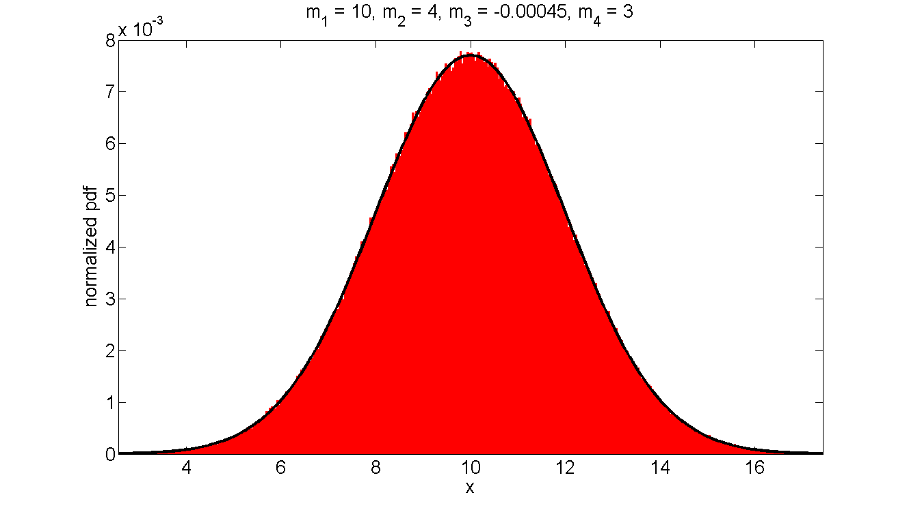
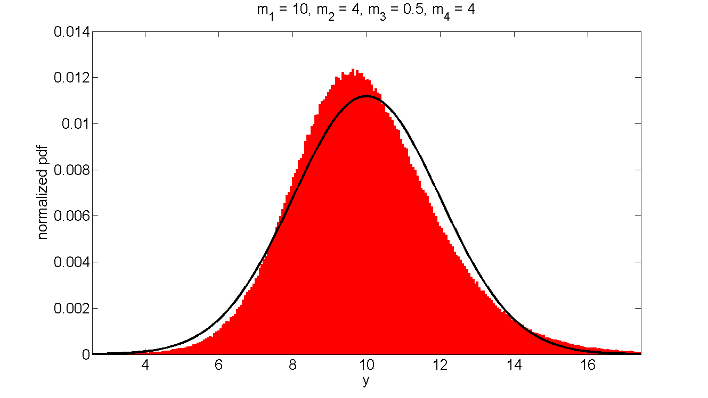

EXAMPLE
This is an illustration of the generation of a non-gaussian random process based on a gaussian one. This method applies well for low skewness, and high kurtosis.
- First, the gaussian-distributed sample x is created.
- Then the non-gausian sample y is computed.
- Finally a verification procedure is carried out.
Contents
Input
clear all;close all;clc % Set the input N = 1e6; % number of data point m1 = 10; % mean of x m2 = 4; % variance of x x = m1+sqrt(m2).*randn(1,N); % random gaussian vector of mean m1 and variance m2 % Target: m3 = 0.5; % target skewness. NB: m3 is equal to 0 for a gaussian variable m4 = 4 ; % target kurtosis. NB: m4 is equal to 3 for a gaussian variable
Computation
compute the new random variable y that is non-gaussian.
[y] = MBHTM(x,m3,m4);
applicability condition is verified 4.49 >= m3^2 = 0.25 Equation solved. fsolve completed because the vector of function values is near zero as measured by the default value of the function tolerance, and the problem appears regular as measured by the gradient.
Verification
Let's compare m1, m2, m3, and m4 between x and y. In addition we see how it affects the distributions.
N.B. : The statistical toolbox may be required for the verification step, since I call the function "fitdist" inside "fitDistEtienne"
A good agreement between the computed and target m3 and m4 is observed.
% Gaussianity fit for x Nbin = 500; fitDistEtienne(x,Nbin,'normal'); set(gcf,'units','normalized','outerposition', [0.1 0.1 0.8 0.8]) set(gcf,'color','w') xlabel(' x '); ylabel('normalized pdf'); title(['m_1 = ',num2str(mean(x),2),... ', m_2 = ',num2str(var(x),2),... ', m_3 = ',num2str(skewness(x),2),... ', m_4 = ',num2str(kurtosis(x),2)]); set(findall(gcf,'-property','fontSize'),'fontsize',20) % Gaussianity fit for y Nbin = 500; fitDistEtienne(y,Nbin,'normal'); set(gcf,'units','normalized','outerposition', [0.1 0.1 0.8 0.8]) set(gcf,'color','w') xlabel(' y '); ylabel('normalized pdf'); title(['m_1 = ',num2str(mean(y),2),... ', m_2 = ',num2str(var(y),2),... ', m_3 = ',num2str(skewness(y),2),... ', m_4 = ',num2str(kurtosis(y),2)]); set(findall(gcf,'-property','fontSize'),'fontsize',20) 